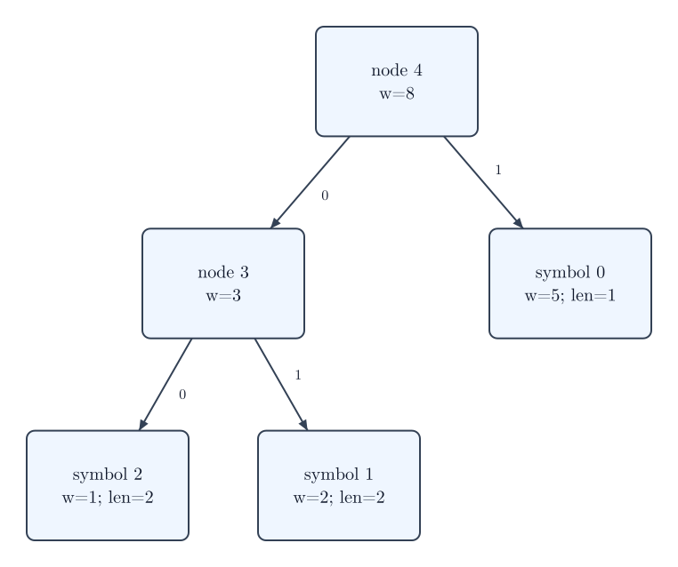
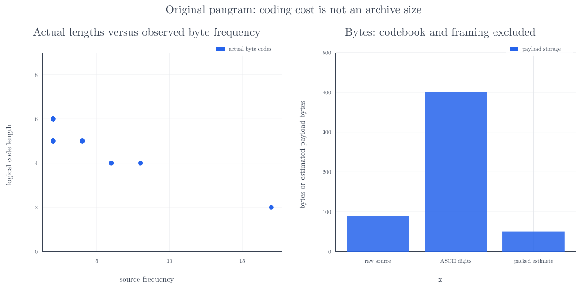
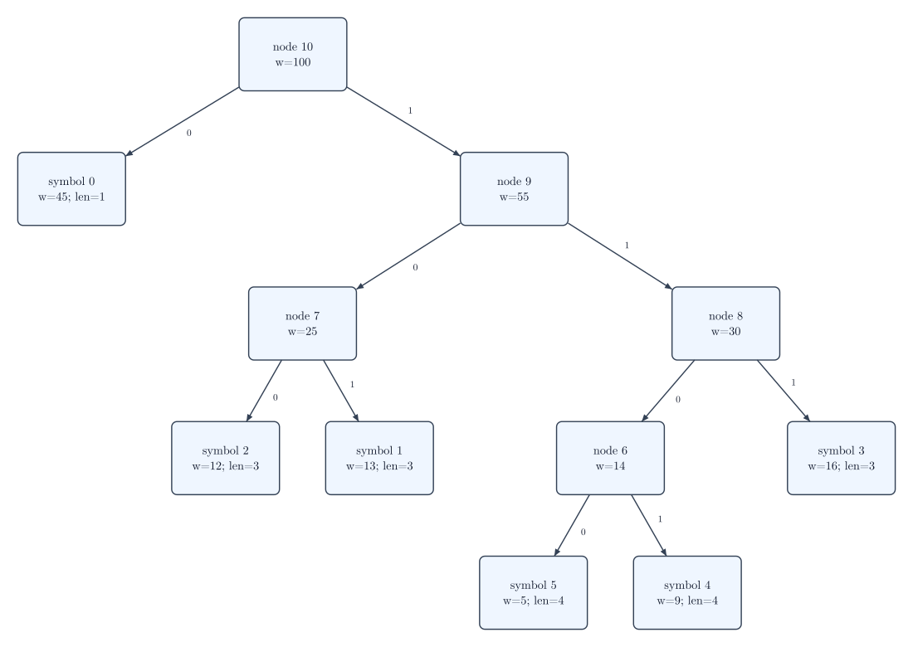
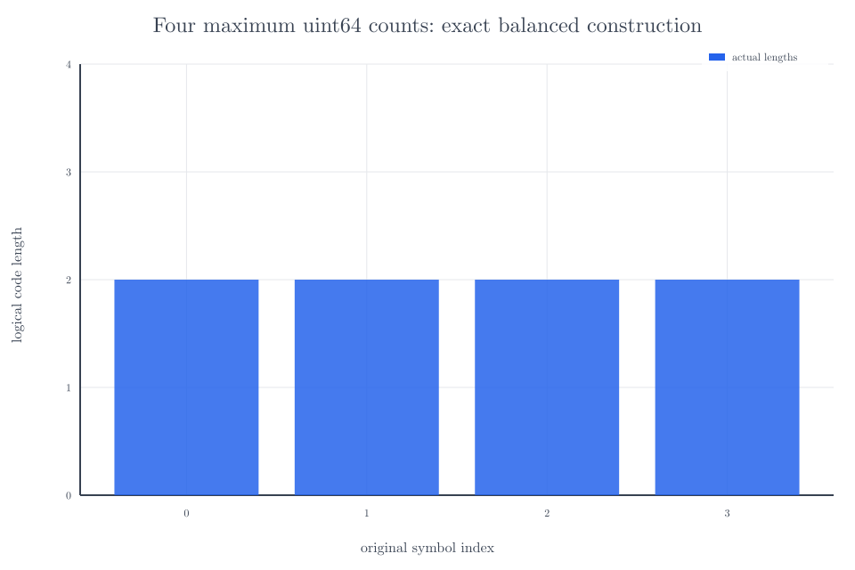
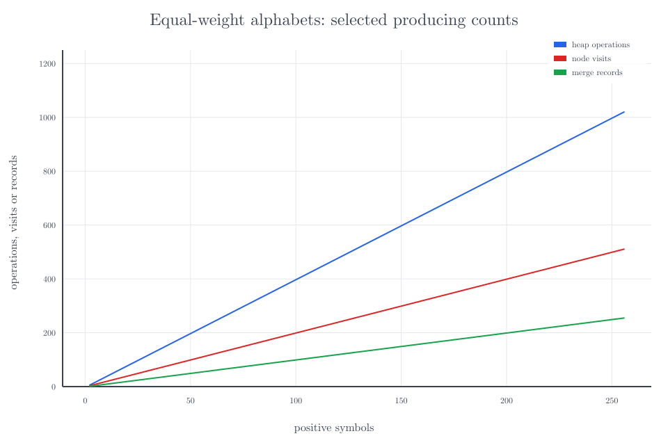

Huffman coding: exact merges, checked decoding and logical payload cost
Abstract
Build a binary prefix code by repeatedly merging the two least-weight items. This report follows actual minimum removals and parent insertions, proves the greedy contraction rule, and retains the original two-sentence text. Exact integer weights prevent frequency overflow, including when the sum exceeds uint64. Fully validated byte models reject malformed trees, nonbinary digits and unfinished codewords. We separate logical payload bits from the ASCII digit string returned by the API and from codebook/framing costs. Empty and forced one-bit singleton conventions make the entropy bound's conditions explicit.
Three symbols, two actual merges
Use counts 5,2,1 for integer symbols 0,1,2. The first minimum pair is 1 and 2, merged into weight 3. Then 3 and 5 merge into 8. The resulting lengths are 1,2,2, and weighted path cost is5*1+2*2+1*2=11 bits for eight source symbols. The actual parent weights 3+8 give the same 11. Reading the tree's0/1 branches yields each prefix word; the root-to-leaf depths explain the lengths.
The native diagram below uses the topology and decimal weights from the producing execution, not a reconstructed heap history. Leaves are displayed in actual left-to-right tree order, which differs from input symbol order.
#include <dm/dm.hpp>
int main() {
std::filesystem::create_directories("build");
const auto t = dm::algorithms::huffman_counts_trace({5, 2, 1});
const auto s = dm::algorithms::huffman_summary(t.counts, t.run.lengths);
std::print("| actual first child | weight | actual second child | weight | new parent | weight |\n| " "---: | ---: | ---: | ---: | ---: | ---: |\n");
for (const auto &m : t.merges)
std::print("| {} | {} | {} | {} | {} | {} |\n", m.left, m.left_weight,
m.right, m.right_weight, m.parent, m.parent_weight);
std::print("\nOriginal-index lengths {}; exact total {}; weighted bits {}; merge cost {}; mean {:.9f}; " "entropy {:.9f}; computed Kraft sum {:.9f}.\n",
t.run.lengths, t.run.total_weight, t.run.weighted_bits,
t.run.merge_cost, s.mean_bits, s.entropy_bits, s.kraft_sum);
dm::algorithms::huffman_tree_diagram(t).save_svg("build/huffman_tiny.svg");
if (t.run.lengths != std::vector<int>{1, 2, 2} ||
t.run.weighted_bits != "11" || t.run.merge_cost != "11")
throw std::runtime_error("tiny construction");
}| actual first child | weight | actual second child | weight | new parent | weight |
|---|---|---|---|---|---|
| 2 | 1 | 1 | 2 | 3 | 3 |
| 3 | 3 | 0 | 5 | 4 | 8 |
Original-index lengths [1, 2, 2]; exact total 8; weighted bits 11; merge cost 11; mean 1.375000000; entropy 1.298794941; computed Kraft sum 1.000000000.

Derive the greedy rule and its cost identity
For positive weights w_s, a binary prefix tree has cost C=sum_s w_s*l_s. With at least two symbols an optimal tree can be full: a unary internal node can be removed to shorten its descendants. A deepest leaf then has a leaf sibling, since an internal sibling would have an even deeper descendant.
Assign the two smallest weights to such deepest sibling positions. Exchanging a smaller weight a at depth d_a with a larger weight b at depth d_b>=d_a changes cost by (a-b)(d_b-d_a)<=0. Thus an optimum exists in which the two smallest weights are deepest siblings. Contract them into one leaf of weight a+b:
An optimal contracted tree must be used, otherwise replacing it would improve the original tree. Induction therefore justifies the repeated two-minimum merge. Each leaf weight contributes once for every ancestor, so
The implementation maintains exact nonnegative weights and costs. Its fixed-limb accumulator covers every representable uint64 count vector on the supported integer platforms: the total is below 2128 and even the sum of all possible parent weights is below 2192. It does not reject valid counts merely because their sum exceeds uint64. Leaves are positive symbols in ascending original-index order; ties break by node creation ID. Byte construction uses unsigned byte values 0..255, making its choices independent of unordered-map iteration. This is a deterministic tree rule, not a claimed canonical wire format.
Entropy bounds need a singleton convention
Let p_s=w_s/sum w and H=-sum p_s log2(p_s). For prefix lengths, Kraft's sum K=sum2(-l_s) is at most 1. Normalize q_s=2(-l_s)/K. Then
For at least two positive symbols, Shannon lengths ceil(-log2 p_s) are positive and have mean strictly below H+1. Huffman's optimum cannot cost more, so H<=mean<H+1. The library deliberately assigns a lone positive symbol the nonempty word0: H=0 but mean=1=H+1. An empty alphabet has mean/entropy 0 by reporting convention. Neither exceptional case supports the old unconditional strict upper-bound claim. Numerical summary fields are rounded diagnostics; the tree validator and exact integer merge costs supply separate structural/arithmetic checks.
Preserve the original text, while distinguishing three storage quantities
The source is the original repeated pangram, including its joining space: 89 ASCII bytes containing 28 distinct byte values. The code counts bytes, not Unicode characters. The selected original letters and period remain in the table. All codes and the exact roundtrip come from the same built model.
The encoder returns an ASCII string containing one character per logical0/1 digit. Its character count is the logical payload bit count, but its actual character storage is not bit-packed. Ceiling(payload_bits/8) is a payload-only packing estimate, not an archive produced by this API. A decodable file also needs its codebook and framing, such as a valid-bit count or an agreed termination rule. Those costs are not included here.
#include <dm/dm.hpp>
int main() {
std::filesystem::create_directories("build");
const auto text = dm::algorithms::huffman_example_text();
const auto t = dm::algorithms::huffman_build_trace(text);
const auto encoded = dm::algorithms::huffman_encode(t.run.code, text);
const auto decoded = dm::algorithms::huffman_decode(t.run.code, encoded);
const auto s =
dm::algorithms::huffman_summary(t.frequencies,
t.run.construction.lengths);
std::print("| selected byte | frequency | actual codeword | length |\n| --- | ---: | --- | ---: |\n");
for (char c : {'e', 't', 'o', 'x', 'z', '.'})
std::print("| {} | {} | {} | {} |\n", c,
t.frequencies[static_cast<unsigned char>(c)],
t.run.code.codes.at(c), t.run.code.codes.at(c).size());
std::print("\nSource bytes {}; active bytes {}; logical payload bits {}; ASCII digit characters {}; " "payload-only packed-byte estimate {}; original8-bit baseline {}; exact roundtrip " "{}.\n\nEntropy {:.9f}; mean logical bits/byte {:.9f}; computed Kraft sum {:.9f}.\n",
text.size(), s.active_symbols, encoded.size(), encoded.size(),
(encoded.size() + 7) / 8, text.size() * 8, decoded == text,
s.entropy_bits, s.mean_bits, s.kraft_sum);
std::vector<double> frequency, length;
for (std::size_t i = 0; i < 256; ++i)
if (t.frequencies[i]) {
frequency.push_back(t.frequencies[i]);
length.push_back(t.run.construction.lengths[i]);
}
auto left = dm::graphics::RPlot::create();
left.points(frequency, length, "actual byte codes", {37, 99, 235}, 5.).title("Actual lengths versus observed byte frequency").x_label("source frequency").y_label("logical code length").y_limits(0, 9);
auto right =
dm::graphics::RPlot::barplot({double(text.size()),
double(encoded.size()),
double((encoded.size() + 7) / 8)},
{"raw source", "ASCII digits",
"packed estimate"}, "payload storage",
{37, 99, 235});
right.title("Bytes: codebook and framing excluded").y_label(
"bytes or estimated payload bytes").y_limits(0, 500);
auto layout = dm::graphics::RLayout::create(1, 2);
layout.add(left).add(right).size(1250, 620).title(
"Original pangram: coding cost is not an archive size").fit_panels().save_svg("build/huffman_original.svg");
if (decoded != text ||
t.run.construction.weighted_bits != std::to_string(encoded.size()))
throw std::runtime_error("original roundtrip");
}| selected byte | frequency | actual codeword | length |
|---|---|---|---|
| e | 6 | 1001 | 4 |
| t | 4 | 11001 | 5 |
| o | 8 | 1011 | 4 |
| x | 2 | 10000 | 5 |
| z | 2 | 10100 | 5 |
| . | 2 | 110110 | 6 |
Source bytes 89; active bytes 28; logical payload bits 400; ASCII digit characters 400; payload-only packed-byte estimate 50; original8-bit baseline 712; exact roundtrip true.
Entropy 4.419591371; mean logical bits/byte 4.494382022; computed Kraft sum 1.000000000.

Six classical weights and a merge-cost proof you can inspect
For weights 45,13,12,16,9,5, the successive parent weights are 14,25,30,55,100. Their sum 224 equals the exact weighted path cost, so the mean is2.24 bits per symbol over 100 occurrences. Heap operations below are actual removals/insertions; no heap contents are regenerated for presentation. The diagram uses that same producing topology.
#include <dm/dm.hpp>
int main() {
std::filesystem::create_directories("build");
const auto t = dm::algorithms::huffman_counts_trace({45, 13, 12, 16, 9, 5});
const auto s = dm::algorithms::huffman_summary(t.counts, t.run.lengths);
std::print("| merge | first weight | second weight | parent weight | parent ID |\n| ---: | ---: | ---: " "| ---: | ---: |\n");
for (std::size_t i = 0; i < t.merges.size(); ++i) {
const auto &m = t.merges[i];
std::print("| {} | {} | {} | {} | {} |\n", i + 1, m.left_weight,
m.right_weight, m.parent_weight, m.parent);
}
std::print("\nLengths {}; weighted bits {}; merge cost {}; entropy {:.9f}; mean {:.9f}; actual heap " "pushes {}; pops {}; integer-length tree visits {}.\n",
t.run.lengths, t.run.weighted_bits, t.run.merge_cost,
s.entropy_bits, s.mean_bits, t.run.work.heap_pushes,
t.run.work.heap_pops, t.run.work.tree_visits);
dm::algorithms::huffman_tree_diagram(t).save_svg("build/huffman_classic.svg");
if (t.run.weighted_bits != "224" || t.run.merge_cost != "224" ||
t.merges.size() != 5)
throw std::runtime_error("classic cost identity");
}| merge | first weight | second weight | parent weight | parent ID |
|---|---|---|---|---|
| 1 | 5 | 9 | 14 | 6 |
| 2 | 12 | 13 | 25 | 7 |
| 3 | 14 | 16 | 30 | 8 |
| 4 | 25 | 30 | 55 | 9 |
| 5 | 45 | 55 | 100 | 10 |
Lengths [1, 3, 3, 3, 4, 4]; weighted bits 224; merge cost 224; entropy 2.219879978; mean 2.240000000; actual heap pushes 11; pops 10; integer-length tree visits 11.

Empty, singleton, huge weights and malformed input
Zero counts are absent symbols with length 0. A lone positive count has length 1 and no merges, so weighted_bits equals its count while merge_cost is 0. Four equal UINT64_MAX counts instead require balanced lengths2,2,2,2. The old uint64 heap overflowed and produced3,3,2,1; the corrected exact kernel returns the balanced result without narrowing the supported per-count domain.
The byte model is an owned public aggregate, so every codec validates it before walking: a wholly empty model or a connected acyclic full binary tree with unique byte leaves, checked indices and exact code-map/path agreement. A full byte tree has at most 511 nodes. Valid older node numbering is accepted, including a root away from the end. Every input digit must be 0/1, singleton payloads use only 0, and a final partial codeword is rejected. Unknown source bytes preserve the out_of_range error from lookup. No output is returned partially on failure.
#include <dm/dm.hpp>
int main() {
std::filesystem::create_directories("build");
const auto maximum = std::numeric_limits<std::uint64_t>::max();
const std::vector<std::vector<std::uint64_t>> cases = {
{}, {0, 0}, {0, 7, 0}, {maximum, maximum, maximum, maximum}
};
std::print("| case | lengths | exact total weight | exact weighted bits | exact merge cost | entropy | " "mean |\n| ---: | --- | ---: | ---: | ---: | ---: | ---: |\n");
for (std::size_t i = 0; i < cases.size(); ++i) {
const auto t = dm::algorithms::huffman_counts_trace(cases[i]);
const auto s = dm::algorithms::huffman_summary(t.counts, t.run.lengths);
std::print("| {} | {} | {} | {} | {} | {:.9f} | {:.9f} |\n", i + 1,
t.run.lengths, t.run.total_weight, t.run.weighted_bits,
t.run.merge_cost, s.entropy_bits, s.mean_bits);
}
const auto model = dm::algorithms::huffman_build("abc");
bool nonbinary =
false, singleton =
false, truncated = false, cycle = false, quota = false;
try {
(void) dm::algorithms::huffman_decode(model, "x");
} catch (const std::invalid_argument &) {
nonbinary = true;
}
try {
(void) dm::algorithms::huffman_decode(dm::algorithms::huffman_build(
"aaaa"), "1");
} catch (const std::invalid_argument &) {
singleton = true;
}
for (const auto & [symbol, word] : model.codes)
if (word.size() > 1) {
try {
(void) dm::algorithms::huffman_decode(model,
word.substr(
0, word.size() - 1));
} catch (const std::invalid_argument &) {
truncated = true;
}
break;
}
auto broken = model;
broken.tree[broken.root].left = broken.root;
try {
(void) dm::algorithms::huffman_decode(broken, "0");
} catch (const std::invalid_argument &) {
cycle = true;
}
const auto exact =
dm::algorithms::huffman_counts_trace({1, 1, 2}, {3, 2});
try {
(void) dm::algorithms::huffman_counts_trace({1, 1, 2}, {3, 1});
} catch (const std::length_error &) {
quota = true;
}
std::print("\nNonbinary rejected {}; singleton1 rejected {}; incomplete suffix rejected {}; cyclic " "model rejected {}; exact merge records {}; one-short record cap rejected {}.\n",
nonbinary, singleton, truncated, cycle, exact.merges.size(),
quota);
const auto wide =
dm::algorithms::huffman_counts_run({maximum, maximum, maximum,
maximum});
std::vector<double> lengths(wide.lengths.begin(), wide.lengths.end());
auto p =
dm::graphics::RPlot::barplot(lengths, {"0", "1", "2", "3"},
"actual lengths", {37, 99, 235});
p.title("Four maximum uint64 counts: exact balanced construction").x_label("original symbol index").y_label("logical code length").y_limits(0, 4).save_svg("build/huffman_controls.svg");
if (!nonbinary || !singleton || !truncated || !cycle || !quota ||
wide.lengths != std::vector<int>{2, 2, 2, 2})
throw std::runtime_error("codec/weight controls");
}| case | lengths | exact total weight | exact weighted bits | exact merge cost | entropy | mean |
|---|---|---|---|---|---|---|
| 1 | [] | 0 | 0 | 0 | 0.000000000 | 0.000000000 |
| 2 | [0, 0] | 0 | 0 | 0 | 0.000000000 | 0.000000000 |
| 3 | [0, 1, 0] | 7 | 7 | 0 | 0.000000000 | 1.000000000 |
| 4 | [2, 2, 2, 2] | 73786976294838206460 | 147573952589676412920 | 147573952589676412920 | 2.000000000 | 2.000000000 |
Nonbinary rejected true; singleton1 rejected true; incomplete suffix rejected true; cyclic model rejected true; exact merge records 2; one-short record cap rejected true.

New run/trace policies default to one million complete borrowed input entries and one million merge records, each with zero disabling its cap. Count input entries include zero positions; byte input entries mean source bytes rather than the fixed 256 histogram slots. The complete known m-1 merge count is admitted before heap work. Captured input copies, ordinary output topology/lengths, scalar/decimal metadata and capacity are separate from that record count; it is not a byte or peak-memory quota. Legacy interfaces have no optional policy caps. Failure returns no truncated or replayed history. Native tree views apply an independent complete leaf-display cap and abbreviate only long on-figure weight labels; exact values remain in the trace.
Producing work, not a synthetic timing curve
For m positive symbols there are m initial leaf insertions, m-1 parent insertions, 2(m-1) minimum removals and 2m-1 integer-length node visits. These are selected producing counts. They exclude heap comparison internals, exact-integer limb operations, copies, allocation, decimal formatting and byte-codeword projection. Heap operation counts grow linearly, while priority-queue comparisons have the familiar O(m log(m+1)) bound. Neither the plot nor these counters are elapsed-time measurements.
#include <dm/dm.hpp>
int main() {
std::filesystem::create_directories("build");
std::vector<double> x, heap, visits, records;
std::print("| positive symbols | actual pushes | actual pops | integer-length visits | actual merge " "records | exact weighted bits |\n| ---: | ---: | ---: | ---: | ---: | ---: |\n");
for (std::size_t m : {2, 4, 8, 16, 32, 64, 128, 256}) {
const auto t =
dm::algorithms::huffman_counts_trace(std::vector<std::uint64_t>(
m, 1));
const auto &w = t.run.work;
std::print("| {} | {} | {} | {} | {} | {} |\n", m, w.heap_pushes,
w.heap_pops, w.tree_visits, t.merges.size(),
t.run.weighted_bits);
x.push_back(m);
heap.push_back(w.heap_pushes + w.heap_pops);
visits.push_back(w.tree_visits);
records.push_back(t.merges.size());
if (w.heap_pushes != 2 * m - 1 || w.heap_pops != 2 * (m - 1) ||
w.tree_visits != 2 * m - 1)
throw std::runtime_error("actual work counts");
}
auto p = dm::graphics::RPlot::create();
p.line(x, heap, "heap operations", {37, 99, 235}, 2.).line(x, visits,
"node visits",
{220, 38, 38}, 2.).line(x, records, "merge records", {22, 163, 74}, 2.).title("Equal-weight alphabets: selected producing counts").x_label("positive symbols").y_label("operations, visits or records").y_limits(0, 1250).save_svg("build/huffman_work.svg");
}| positive symbols | actual pushes | actual pops | integer-length visits | actual merge records | exact weighted bits |
|---|---|---|---|---|---|
| 2 | 3 | 2 | 3 | 1 | 2 |
| 4 | 7 | 6 | 7 | 3 | 8 |
| 8 | 15 | 14 | 15 | 7 | 24 |
| 16 | 31 | 30 | 31 | 15 | 64 |
| 32 | 63 | 62 | 63 | 31 | 160 |
| 64 | 127 | 126 | 127 | 63 | 384 |
| 128 | 255 | 254 | 255 | 127 | 896 |
| 256 | 511 | 510 | 511 | 255 | 2048 |

Validation and primary source
Native sanitizer tests enumerate 4096 six-position small count vectors and compare their cost with exhaustive pair-merge dynamic programming, reconstruct every actual minimum removal, and check lengths, Kraft sums and work. They roundtrip 1365 binary/high-byte strings, check all 256 byte values, stable input-order-independent byte choices, malformed roots/children/cycles/maps/unreachable nodes, strict payload completion, wide weights, complete quotas, ownership, summaries and native topology views. Frozen comparisons preserve all 65536 ordinary count-length vectors and 1365 old byte payload costs and old-book decodes. An independent arbitrary-precision Python heap verifies 5123 count cases and 26799 actual merge events, including full-width random counts and a 93-symbol Fibonacci case. All 35 original consumer tests pass. Fresh documentation checks cover 92 definitions, 24 compiled public examples and four clangd hovers. All five complete MEP programs, five inspected native figures and both computed-result exports pass, with identical source/build/export images. The binary construction argument on page 1099 of the original paper was checked against the derivation here.
The original source is [David A. Huffman, A Method for the Construction of Minimum-Redundancy Codes](https://web.stanford.edu/class/ee398a/handouts/papers/Huffman%20-%20Min%20Redundancy%20Codes%20-%20IRE52.pdf), Proceedings of the IRE 40(9), 1098–1101, 1952, [DOI 10.1109/JRPROC.1952.273898](https://doi.org/10.1109/JRPROC.1952.273898). This report specializes to binary positive codewords and explicit integer weights, with a forced singleton convention and a deterministic unsigned-byte tie rule. It does not implement codebook serialization, packed output or a complete archive format.